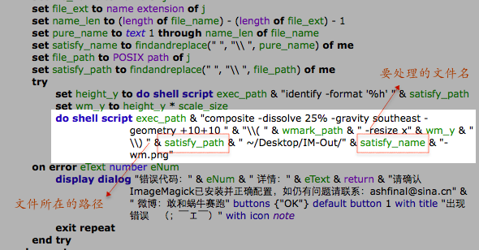

AppleScript － ImageMagick 图像处理脚本
最近在学习 ImageMagick 图像处理命令，在微博上以 #ImageMagick每日技巧# 为标签分享了一些内容。觉得 ImageMagick 真的是很强大的工具，于是趁空闲尝试把几行命令用 AppleScript 包装起来，就这样发布出来了 …… 当然这里分享的仅是个人觉得有点难记的命令，简单的直接终端里敲就可以。下载链接在这里： ImageMagick app ，运行需要 ImageMagick 命令行支持，推荐使用 brew 进行安装：
brew install imagemagick
安装完成版本应该是 6.9.1-0 ，执行路径为 /usr/local/Cellar/imagemagick/6.9.1-0/bin/ 。
既然涉及到这个话题，还是简单介绍下 ImageMagick 吧。官网在这里： http://www.imagemagick.org
ImageMagick 可以读取和编辑超过 200 种以上的图像格式，对它们进行格式转换、调整大小、切割旋转、添加特效、图层叠加、蒙板混合、添加文字等等各种操作。官网提供了很好的文档和例子，感兴趣的同学可以跳转过去看看。常用的命令基本就 convert、composite 两个，对图像的处理则是通过操作符来完成的。基本都是简短的英文单词，所以记忆压力也不大。简单举几个例子：
将 Downloads 里的 jpg 格式批量转换为 png：
convert ~/Downloads/*.jpg result.png
批量调整大小：
convert ~/Downloads/*.jpg -resize 480x320 result.png
拼接图像：
convert file1.png file2.png file3.png -append result.png
马赛克：
convert eggkick.png -resize 10% -scale 1000% result.png
高斯模糊：
convert eggkick.png -blur 0x8 result.png
宝丽来照片效果：
convert eggkick.png +polaroid result.png
添加图片水印：
composite wmark.png -watermark 30% eggkick.png result.png
制作GIF动画：
convert frame[1-5].png -delay 50 -loop 0 result.gif
视频转换GIF动画：
convert some.mp4 -layers Optimize result.gif
需要说明的是这些操作都是可以无限叠加的。比如调整为 50% 大小再旋转 75 度，顺便转换格式：
convert eggkick.png -resize 50% -rotate 75 result.tiff
还有很多很多 …… 大家可以点击笔者微博的 #ImageMagick每日技巧#标签了解更多操作用法。
说这么多其实只是“忽悠”你安装 ImageMagick 啦，但真正使用一段时间后你就会觉得非常嗨皮。如果刚开始命令记不住，可以保存成快捷短语，使用时粘贴出来修改文件名就可以了。通常我们面对的都是很基本的图像处理，ImageMagick 足以满足一般性的需求。笔者并非鼓励大家都去使用 ImageMagick 处理图片，但确实有些场景下使用它会非常迅速便捷。而命令行特有的批量操作、易于扩展的特点，提供了更多的可能性。比如前面我们提供的 AppleScript 打包的文件，使用就非常简单：
把想要处理的文件拖放到应用图标上，就会批量处理并把结果放到同一文件夹。
因为是使用 AppleScript 做胶水和外壳，你可以方便地修改以满足自己的需求。方法是：右键点击 － 显示包内容 － Contents/Resources/Scripts 一路进去 － 编辑 main.scpt - 然后保存就可以了。
别看到内容貌似不少，其实真正要修改的仅有一行，就是含有 ImageMagick 命令 convert 那行啦。把要执行的操作符与变量全部拼接起来就可以。

以下是已经「装配」好的命令执行效果截图：
roundR!.app - 圆角图片：
Stack!.app - 堆叠效果：
Torn!.app - 撕纸效果：
GPSInfo!.app - 读取并添加 GPS 信息标签：
wMark!.app - 添加图片水印：
记得使用前先配置好水印图片路径
OK，先这样。看情况再来更新帖子，欢迎同好一起交流提高！(((o(ﾟ▽ﾟ)o)))
文章链接：https://macplay.github.io/posts/applescript-imagemagick-tu-xiang-chu-li-jiao-ben/
发布/更新于：
版权声明：如无特别说明，本站文章均遵循 CC BY-NC-SA 4.0 协议，转载请注明作者及出处。